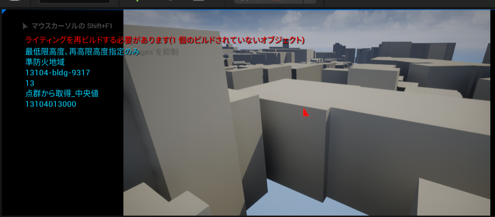

属性情報へのアクセス
このページではブループリントを利用して都市モデルの属性情報にアクセスする方法を記載します。
都市モデルのロード
サンプルとしてマウスをクリックした際にカメラの中心に位置する都市オブジェクトの属性情報を画面に表示するスクリプトを紹介します。
ブループリントの利用
SDKにはサンプルのブループリントが含まれています。
確認するには、コンテンツブラウザで 設定 → プラグインコンテンツを表示 にチェックを入れ、次の場所にあるブループリントを開いてください：Plugins/PLATEAU SDK for Unreal コンテンツ/Samples/AttributeLoadSample/ClickToGetAttribute
このブループリントを利用するには次のようにします：
- 都市モデルをインポートしたレベルに
ClickToGetAttributeを配置します。 - その詳細の CityModel 欄にインポートした都市モデルを割り当てます。
ウィンドウ/ワールドセッティングのGameMode/ゲームモードオーバーライドをClickEventGameModeに指定します。- 再生して都市オブジェクトをクリックすると属性情報が表示されます。

ブループリントの説明

マウスクリックに LineTrace を飛ばす

クリック位置の CityObjectID を取得する

CityModel変数には属性情報を取得したいPLATEAUInstancedCityModelアクタを設定します。PLATEAUInstancedCityModelアクタは都市モデルをインポートすることによって生成されます。
GetCityObjectInfoノードはComponentを受け取って都市オブジェクトにアクセスするために必要な情報PLATEAUCityObjectInfoを出力します。PLATEAUCityObjectInfoのIDから、個々の都市オブジェクトのIDを取得できます。
GMLファイルをパースし、CityObjectIDに対応する属性情報を取得する
LoadAsyncノードは非同期でCityGMLのパースを行い、CityModelインスタンスを出力します。GetCityObjectByIDノードはCityModelインスタンスとFeatureIDを受け取り、対応するCityObjectインスタンスを出力します。CityObjectは属性情報を持ちます。属性情報はキーと値のペアのセットです。GetAttributeMapノードはCityObjectインスタンスを受け取り、都市オブジェクトが持つ属性情報をAttributeMapインスタンスとして出力します。
都市オブジェクトの属性情報の表示

属性とは
都市オブジェクトの情報は「属性」として取得できます。
属性は例えば
(String) 大字・町コード => 42,
(String) 防火及び準防火地域 => 準防火地域
のように、キーと値のペアからなる辞書形式の情報です。
属性辞書は CityObject.AttributesSet メソッドで取得できます。AttributesSet.ToString() をコールすると、属性情報をすべて文字列にして返します。
AttributesSet.GetValueOrNull("key") によってキーに対応するAttributeValue を取得できます。AttributeValue の具体的な値は文字列型として取得できるか、または
子の属性（属性は入れ子になることもあります）として取得できるかのいずれかです。
属性が入れ子になっている例は次のとおりです。
(AttributeSet) 多摩水系多摩川、浅川、大栗川洪水浸水想定区域（想定最大規模） =>
[ { (String) 浸水ランク => 2 }
{ (Measure) 浸水深 => 0.990 }
{ (Measure) 継続時間 => 0.68 }
{ (String) 規模 => L2 }
]}
上の例において、(括弧)内の文字は属性の型を示します。
属性値は次の型があります。:AttributeSet, String, Double, Integer, Data, Uri, Measure
AttributeSet以外の型はすべて内部的には文字列型であり、AttributeValue.AsString で値を取得できます。
入れ子AttributeSetの値は AsString ではなく AttributeValue.AsAttrSetで取得できます。
属性値の型は AttributeValue.Type で取得でき、この値が AttributeSet である場合は
AttributeValue.AsAttrSetで子の AttributesMap を取得できます。AttributeValue.Type がそれ以外 (String, Doubleなど) である場合は AttributeValue.AsString で文字列を取得できます。